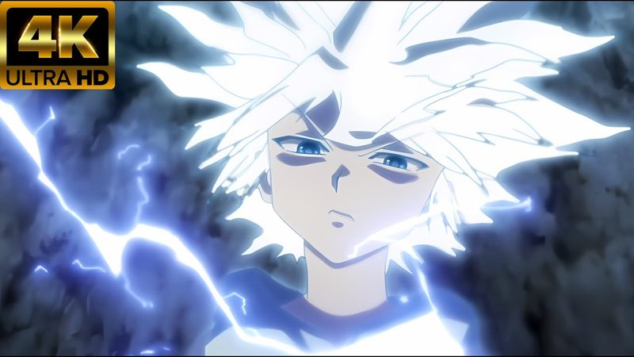

Living Circuit
Killua Zoldyck's lightning, given orders. Aura transmuted into electricity and told what to do: Whirlwind lets your body dodge before your mind catches up, you cannot be surprised, and blows simply miss; Speed of Lightning puts the storm under conscious command, blinding movement and strikes that stop a heart for one beat. The price is the meter: every second burns cursed energy, and the storm always runs out.

Living Circuit
"I've set my own rules." The technique answers: the lightning obeys them faster than you can.
Feature map
Level-by-level features
Field notes. Subject: the sorcerer who gave his lightning standing orders. Three truths govern him. First, the program outruns the programmer: Whirlwind lets his body dodge before his mind catches up, he cannot be surprised, and blows simply miss. Second, the storm has two modes: Whirlwind’s reflexive defense and Speed of Lightning’s conscious offense, blinding movement and strikes that stop a heart for one beat. Third, the meter is the price: every second burns cursed energy, Godspeed drains 1 CE per turn, and the storm always runs out. Mark it: “I’ve set my own rules”, and the lightning obeys them faster than he can.
Godspeed: Whirlwind
Bonus action · 2 CE · Enter Godspeed (Whirlwind) for up to 1 minute · While active: attacks against you have disadvantage, you can't be surprised, resistance to lightning damage · 1 CE upkeep at the start of each of your turns.
The program, given its orders: his aura becomes electricity with one standing order, dodge. The storm eats aura the way fire eats air.
Speed of Lightning
Bonus action (requires Godspeed active) · Switch to Speed of Lightning (switching back is also a bonus action; the 1 CE per-turn drain continues) · +30 ft. speed, opportunity attacks against you have disadvantage, unarmed strikes deal +2d8 lightning damage · Once per turn, a hit forces a Con save vs your CE save DC or the target is stunned until the end of your next turn.
The conscious mode: switch from reflex to intent. The current stops the heart for one beat.
Thunderbolt
Action · 2 CE · Target a point within 90 ft (works with or without Godspeed) · Each creature within 10 ft: Dex save vs your CE save DC or 5d8 lightning damage (half on success).
The storm’s answer to distance. Killua's answer to distance. The storm doesn't care whose hand throws it.
Counter-Program
Reaction · While Godspeed (Whirlwind) is active, when an attack misses you: move up to your speed toward the attacker without provoking opportunity attacks, then make one unarmed strike.
Whirlwind takes orders, and now the orders include hitting back. The program was always "dodge." You just added "then punish."
Arc Discharge
Passive · While Godspeed is active, when a lightning-charged unarmed strike or Thunderbolt damages a creature: arcs to one other creature within 20 ft of the first · Dex save vs your CE save DC or lightning damage equal to half the lightning dice rolled (rounded down).
The storm learns to share. One bolt, two victims, no extra cost.
The Storm, Perfected
Once per long rest · Bonus action · For 1 minute: Godspeed costs no CE to maintain, Whirlwind and Speed of Lightning run simultaneously, +30 ft. additional speed · When it ends, gain 1 level of exhaustion.
Once per long rest, the meter breaks. The body was not built to be weather.
Maximum and Domain.
The pinnacle, in two programs: Storm’s Verdict, the Maximum, and Thunderhead, the sure-hit Domain. Capstone material
Maximum: Storm's Verdict
Action · 8 CE · Move up to your speed in a straight line (no opportunity attacks, may pass through enemy spaces) · Each creature you pass within 5 ft: Dex save vs your CE save DC or 8d8 lightning damage and stunned until the end of your next turn (half damage, no stun on success).
The Maximum: he becomes the bolt. You arrive where the lightning decided you were always going.
Domain Expansion: Thunderhead
Full turn · 20 CE · 18th level · Clash 800, burnout 5 rounds, duration 2 min, radius 120 ft · Sure-hit: Storm's Judgment — your lightning cannot miss (attacks auto-succeed, Dex saves auto-fail); once per round, call down a Thunderbolt as a free action for no CE.
The sky becomes a single bruised cloud, low and churning, lit from within by constant silent lightning. The air crackles, hair rises, and the smell of ozone is thick enough to taste. The caster stands at the center like a lightning rod that has chosen its storm.
The sure-hit Domain: a thunderhead with him as its ground wire. The storm doesn't aim; it arrives.
Sure-hit: Storm's Judgment. The sky keeps time with your heartbeat.
Five feats, programmed.
Godspeed's feats are new programs for the storm, each is optional, and you must meet its listed prerequisite before taking it.
Static Sense
While Godspeed is active, he reads the room by its charge, because the storm feels every heartbeat’s electricity.While Godspeed is active, you read the room by its charge: you can sense living creatures within 30 feet of you, even through darkness, invisibility, or thin cover, the storm feels every heartbeat's electricity. This reveals presence and direction only, not identity.
Programmed Fall
Set Whirlwind’s standing orders to include the ground: the program catches him before the floor does.Set Whirlwind's standing orders to include the ground: while Godspeed is active, you cannot be knocked prone by falling, you always land on your feet, and you take no falling damage, the program catches you before the floor does.
Ground Wire
Because the current tells him where it was born. He may do this even while Godspeed is inactive.As a reaction when you or an ally within 15 feet would take lightning damage, you may absorb it: the target takes none, and you learn the direction and distance of the damage's source, the current tells you where it was born. You may do this even while Godspeed is inactive.
Thunderclap
Call Thunderbolt as a flash instead of a strike. The storm announces itself.You may call Thunderbolt as a flash instead of a strike: no damage, but each creature within 30 feet of the point that can see must succeed on a Constitution saving throw against your CE save DC or be blinded until the end of your next turn. The storm announces itself.
Dead-Man's Program
The program outlives the programmer’s awareness.While Godspeed (Whirlwind) is active, you may set one contingency order ("if I fall unconscious, move 30 feet toward the door"). If the trigger occurs, even if you are incapacitated or unconscious, Whirlwind executes it immediately, no action required. The program outlives the programmer's awareness.
Edge cases and shared systems.
Campaign canon notes